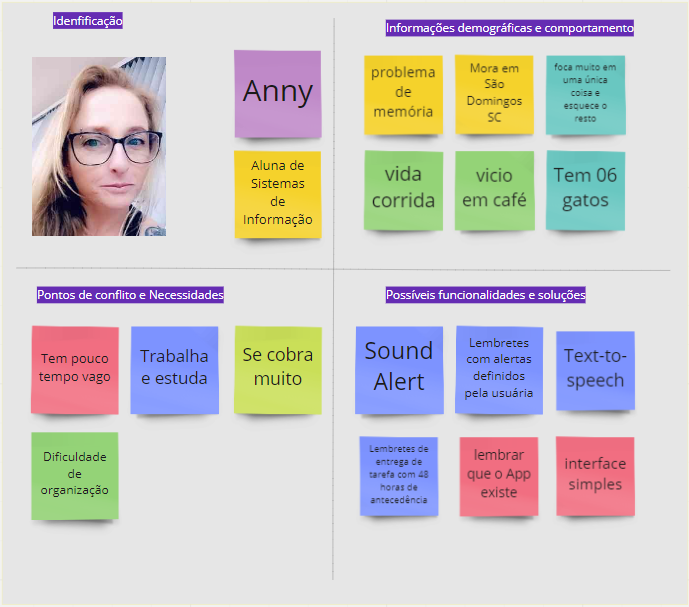
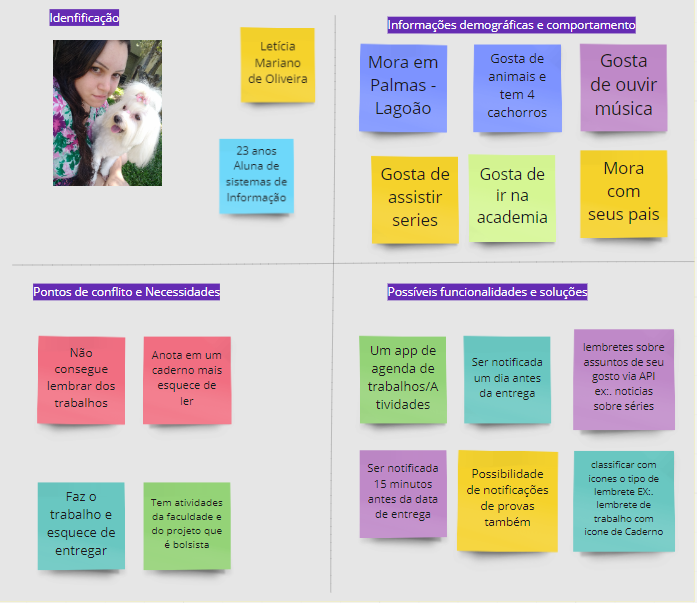
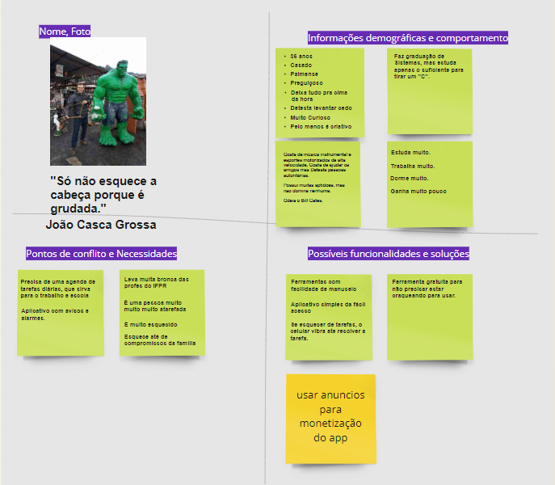

Coloque ordem na sua vida!
Agende horários para seus compromissos e receba notificações de lembrete para eles!
Comece agora
Agende horários para seus compromissos e receba notificações de lembrete para eles!
Comece agora
A escolha do problema foi definida por meio de problemas de memória por parte dos estudantes que tem uma vida muito agitada e desorganizada.
Com o objetivo de minimizar o esquecimento da entrega de trabalhos acadêmicos surge a ideia do remind.er. Um app que torna possível agendar tarefas e notifica o usuário para que não esqueca de seu compromisso.
Não houve pesquisa para definir as necessidades do usuário, as necessidades foram definidas de acordo com o diálogo com outros estudantes, que se veêm na situação complicada da organização e administração de tempo.
O problema foi definido a partir da experiência própria em má administração do tempo do criador do projeto e daqueles que dialogaram no decorrer do desenvolvimento do problema. Dito isso pode-se considerar que a má administração de tempo afeta muitas pessoas.
Anny, aluna de sistemas, problema de memória em decorrencia da vida corrida, super focada, acaba esquecendo o resto ao seu redor, de São Domingos, pouco tempo vago e muita dificuldade com organização
As possíveis soluções para a persona dela são: Alertas sonoros, interface rapida de se utilizar, lembretes definidos por ela e notificações recorrentes.
Letícia, jovem, mora em Palmas no lagoão, bairro afastado de tudo, tem dificuldade de lembrar dos trabalhos, anota em cadernos porém esquece de olhar o caderno, faz os trabalhos e esquece de entregar. Gasta tempo com músicas e séries. Pratica atividade física.
Notificações com tempo personalizado, classificar tipo de lembrete conforme ícone, recebimento de notícias sobre assuntos de seu interesse via API.
João, 35 anos, casado, Palmense, rapaz de meia idade curioso, que detesta levantar cedo e deixa tudo pra ultima hora. Trabalha, estuda e dorme em excesso. Necessita de um app de lembretes pois é muito esquecido, talvez pela pressão do casamento, sendo assim esquece até dos compromissos com a família.
App versátil e fácil de usar, notificações com vibra-call, o app deve ser gratuito e a monetização deve ser feita com anúncios
O processo do desing thinking, teve seu início em uma folha de papel, onde escrevi tudo que deveria apresentar em cada tela. O desing simples pode facilitar a utilização pelo usuário e por meio desse motivo decidi que o desing deveria ser intuitivo, para que o usuário entendesse o que acontece em cada tela.